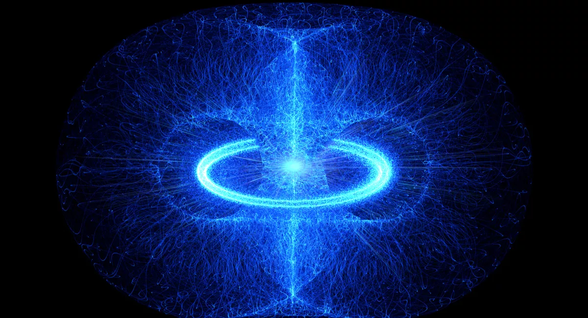
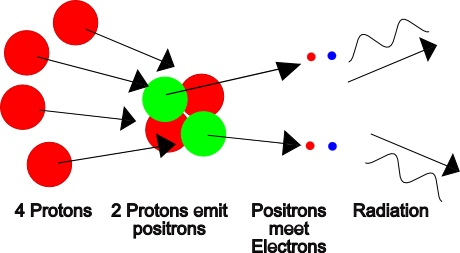
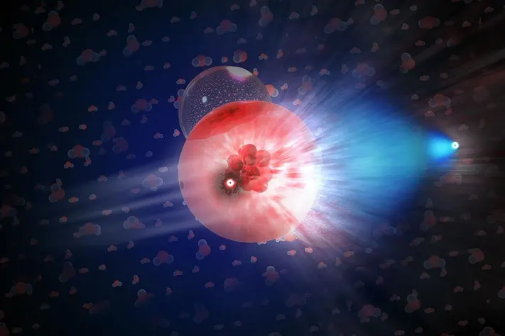
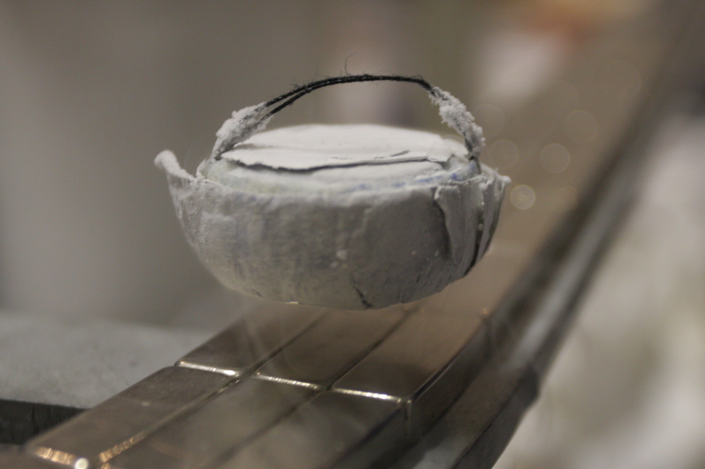

|Materials Science and Engineering |Cosmology |
-OCTOBER 20, 2023
Nucleosynthesis

At about t = 1 s, the ratio of protons to neutrons was determined by the Boltzmann distribution factor e-∆E/KT , where ∆E is the difference between the neutron and proton rest energies: ∆E = 1.294 MeV. At a temperature of about 1010 K, this distribution factor gives about 4.5 times as many protons as neu- trons. However free neutrons (with a half-life of 887 s) decay spontaneously to protons. This decay caused the proton-to-neutron ratio to increase until about t = 225 s. At this time, the temperature was about 109 K, and the average energy was well below 2 MeV.
This energy distribution was critical because the binding energy of the deuteron (a neutron and a proton bound together) is 2.22 MeV. A neutron bound in a deuteron does not decay spontaneously. As the average energy decreased, a proton and a neutron could combine to form a deuteron, and there were fewer and fewer photons with 2.22 MeV or more of energy to dissociate the deuterons again. Therefore the combining of protons and neutrons into deuterons halted the decay of free neutrons.

The formation of deuterons starting at about t = 225 s marked the beginning of the period of formation of nuclei, or nucleosynthesis. At this time, there were about seven protons for each neutron. The deuteron (2H) can absorb a neutron and form a triton (3H),or it can absorb a proton and form (3He). Then (3H) can absorb a proton and 3He can absorb a neutron, each yielding 4He (the alpha particle). A few 7Li nuclei may also have formed by fusion of 3H and 4He nuclei. According to the theory, essentially all the 1H and 4He in the present universe formed at this time. But then the building of nuclei almost ground to a halt. The reason is that no nuclide with mass number A = 5 has a half-life greater than 10-21 s. Alpha particles simply do not permanently absorb neutrons or protons. The nuclide 8Be that is formed by fusion of two 4He nuclei is unstable, with an extremely short half-life, about 7 × 10-17 s. At this time, the average energy was still much too large for electrons to be bound to nuclei; there were not yet any atoms.
Further nucleosynthesis did not occur until very much later, well after t = 1013 s (about 380,000 y). At that time, the temperature was about 3000 K, and the average energy was a few tenths of an electron volt. Because the ionization energies of hydrogen and helium atoms are 13.6 eV and 24.5 eV, respectively, almost all the hydrogen and helium was electrically neutral (not ionized). With the electrical repulsions of the nuclei canceled out, gravitational attraction could slowly pull the neutral atoms together to form clouds of gas and eventually stars. Thermonuclear reactions in stars then produced all of the more massive nuclei.

For stars whose mass is 40% of the sun’s mass or greater, as the hydrogen is consumed the star’s core begins to contract as the inward gravitational pressure exceeds the outward gas and radiation pressure. The gravitational potential energy decreases as the core contracts, so the kinetic energy of nuclei in the core increases. Eventually the core temperature becomes high enough to begin another process, helium fusion. First two 4He nuclei fuse to form 8Be, which is highly unstable. But because a star’s core is so dense and collisions among nuclei are so frequent, there is a nonzero probability that a third 4He nucleus will fuse with the 8Be nucleus before it can decay. The result is the stable nuclide 12C. This is called the triple-alpha process, since three 4He nuclei (that is, alpha particles) fuse to form one carbon nucleus. Then successive fusions with 4He give 16O, 20Ne, and 24Mg. All these reactions are exoergic. They release energy to heat up the star, and 12C and 16O can fuse to form elements with higher and higher atomic number.
For nuclides that can be created in this manner, the binding energy per nucleon peaks at mass number A = 56 with the nuclide 56Fe, so exoergic fusion reactions stop with Fe. But successive neutron captures followed by beta decays can continue the synthesis of more massive nuclei. If the star is massive enough, it may eventually explode as a supernova, sending out into space the heavy ele- ments that were produced by the earlier processes . In space, the debris and other interstellar matter can gravitationally bunch together to form a new generation of stars and planets. Our sun is one such “second-generation” star. The sun’s planets and everything on them (including you) contain matter that was long ago blasted into space by an exploding supernova.
Synthesis of the naturally occurring elements and their isotopes present in the Solar System solids may be divided into three broad segments:
- Primodial Nucleosynthesis
- Energetic particle( cosmic ray ) interactions
- Stellar nucleosynthesis
Popular Articles
Programmable Matter
The fiction and real deal behind matter that can change its physical properties.Proposed digital material having computation, sensing, actuation, and display as continuous properties active over its whole extent.
October 30, 2023

Superconductivity
The science behind materials with zero resisitance and interesting magnetic properties that can cause levitation of materials.
March 16, 2024

Nanomaterials
Materials tend to show different properties under smaller dimensions .For example, materials that are opaque in the macroscopic domain may become transparent on the nanoscale; chemically stable materials become combustible, and electrical insulators become conductors etc.
March 17, 2024
Quantum Dots
Man-made semiconductor nanoscale crystals that have the ability to convert a spectrum of light into different colors.
March 17, 2024